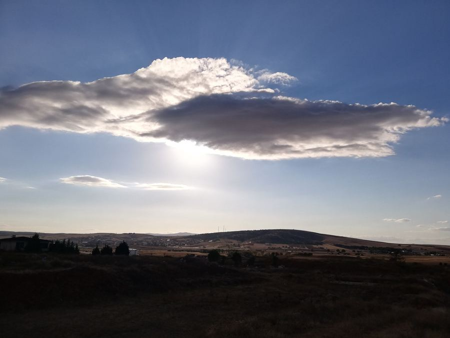
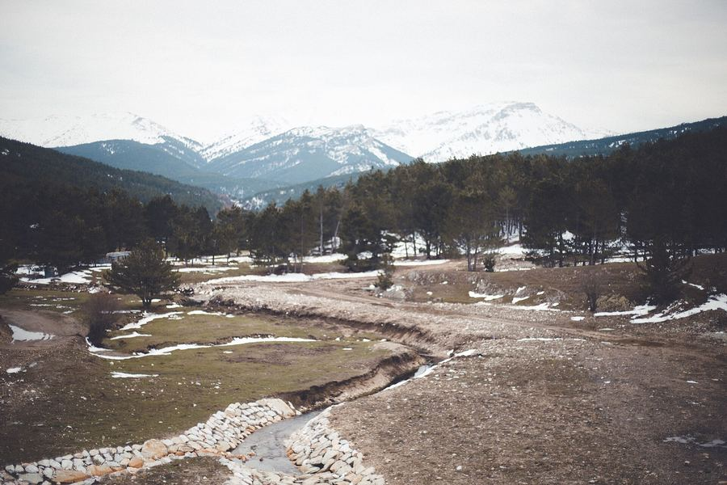
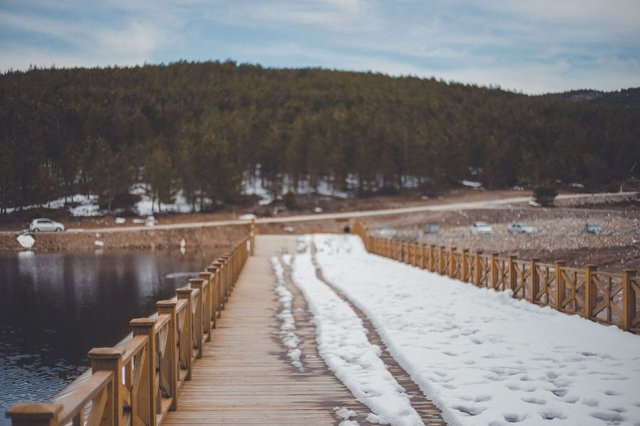
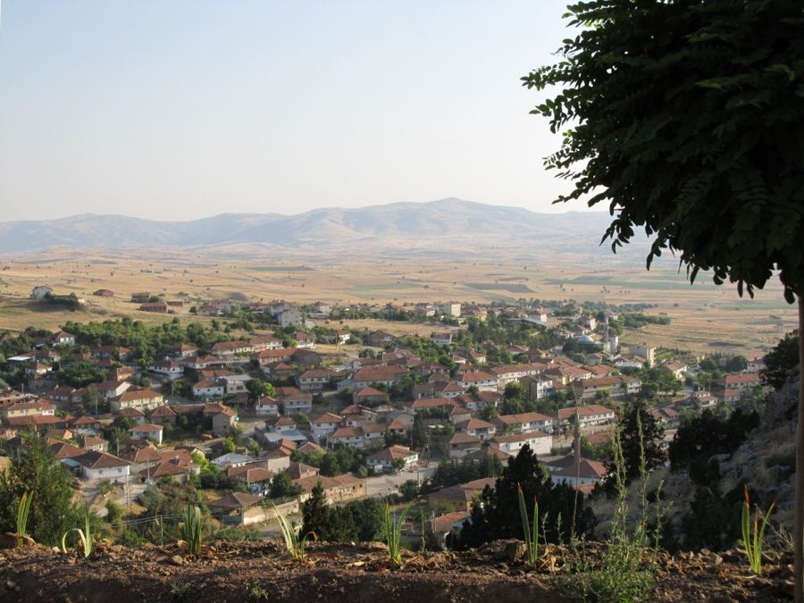
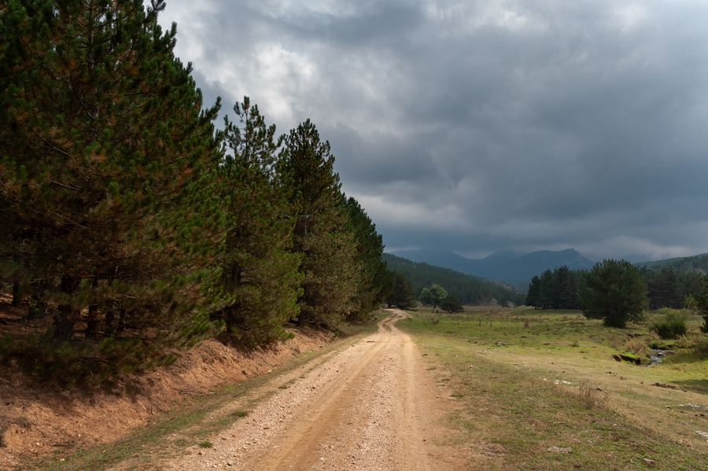
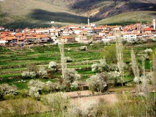
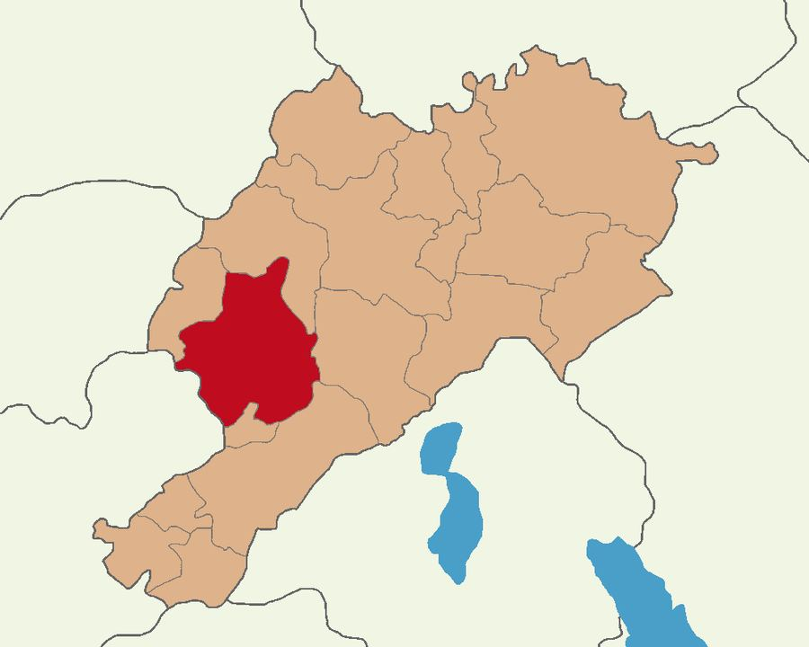

Nöbetçi eczane
Afyonkarahisar · Ege Bölgesi · İç Batı Anadolu
Afyonkarahisar’ın
en büyük ve en gelişmiş
ilçesi: Sandıklı
1.238 km² yüzölçümü, ~1.093 m rakım ve binlerce yıllık yerleşim tarihiyle; Hüdai termali, Akdağ doğası, coğrafi işaretli leblebisi ve tarım sanayisiyle bölgenin dinamik merkezi.
54.376
Nüfus (2025 TÜİK)
1.238
km² yüzölçümü
1.093 m
Ortalama rakım
1924
İlçe kuruluşu
Güncel
Bugün Sandıklı’da
Nöbetçi eczane, son vefat ilanı ve bugünün havası. Liste ve ilanlar Sandıklı Belediyesi’nden her gün otomatik güncellenir.
Kaynak: Sandıklı Belediyesi · hava verisi Open-Meteo · son senkron: —
İlçeyi tanıyın
Neden Sandıklı?
Ankara–Antalya güzergâhında, Kumalar Dağı eteğinde; tarım, termal turizm, ticaret ve kültürle şekillenmiş bir ilçe kimliği.
Hüdai Termal
~72°C kaynak, çamur banyoları, 3.600+ yatak kapasitesi; Frigya Salutaris mirası.
Geniş coğrafya
1.238 km² alan; 63.000 hektar arazi varlığı, Akdağ ve ovayla zengin yüzey.
Leblebi (Cİ)
Türk Patent mahreç işareti (tescil no 1242). Evliya Çelebi: 40 leblebici dükkânı.
Akdağ Tabiat Parkı
Orman, yayla, yaban hayatı; Sandıklı–Çivril hattında korunan doğa alanı.
Görsel belgeler
Sandıklı’dan gerçek kareler
Wikimedia Commons’ta paylaşılan Sandıklı ve Akdağ fotoğrafları.






Fotoğraflar Wikimedia Commons — Category:Sandıklı ve Mount Akdağ altındadır. Tüm galeri →
Hüdai Termal Turizm Merkezi
İlçe merkezine ~8–10 km · Afyon–Antalya yoluna ~5–6 km
Sağlık turizmi
Şifalı Frigya’nın adresi: Hüdai
Kaynaktan ~72°C çıkan termomineralli su; toplam mineralizasyon ~1669,5 mg/L. Yöre kiliyle hazırlanan çamur banyoları Hüdai’yi ülkenin en bilinen termal destinasyonlarından biri yapar.
- Romatizma, eklem, kas-iskelet ve cilt sağlığına destek (hekim kontrolünde)
- Kadın-erkek ayrı çamur, kür merkezi, açık/kapalı havuzlar
- Termal otel + tesislerle 3.600+ yatak kapasitesi (STSO verisi)
- ÇamurFest ve Termal Turizm Festivali ile markalaşma
Coğrafya
Konum ve iklim
İç Ege’de; Ege, Akdeniz ve İç Anadolu’nun kesişiminde. Doğusunda Kumalar Dağı, güneybatıda Akdağ kütlesi. İl merkezi Afyonkarahisar’a yaklaşık 65 km.
- Yüzölçümü1.238 km²
- Rakım (ortalama)1.093 m
- Yıllık ortalama sıcaklık~13,2 °C
- İklimKarasal–Akdeniz geçiş
- Nüfus (2025)54.376 (26.449 erkek · 27.927 kadın)
- Merkez / belde-köy~34.876 / ~19.500

Kusura Höyük
İlçeye ~12–13 km · MÖ 3000–1500 kültür katları · 1935–37 Lamb kazısı
Tarih
MÖ 2700’den Cumhuriyet’e
Kusura Höyük’te Hitit mayası Kussar anlatıları; Frig döneminde Apemie Kivatos; Roma–Bizans; Emir Sanduk ve Germiyanoğulları; Osmanlı; 1924’te ilçe.
- Cumhuriyet döneminde kazılan ilk Anadolu höyüklerinden (Winifred Lamb)
- İsim efsaneleri: sandık, Emir Sanduk, Aziz Mina sandukası
- Yunus Emre – Taptuk Emre manevi mirası
- Kurtuluş Savaşı’nda kısa süreli işgal ve direniş hafızası
Ekonomi
Tarım, sanayi, termal, ticaret
Osmanlı’dan “Sandıklı Altını”na; bugün leblebi, haşhaş, pancar, patates ve kaplıca.
63.000 ha
Toplam arazi
Ekilen ~54.297 ha · sulanabilir ~8.589 ha (belediye verisi)
2.
Haşhaş üretimi
Türkiye’de Çivril’den sonra ikinci sıra (belediye)
428
KSS işyeri kapasitesi
Küçük Sanayi Sitesi · tarım makineleri · yem · un
Rota
Görmeden dönmeyin
Doğa
Maneviyat
Tarih · Lezzet
Pratik hizmetler
Belediye hizmet linkleri
Güncel listeler Sandıklı Belediyesi’nden senkronlanır.